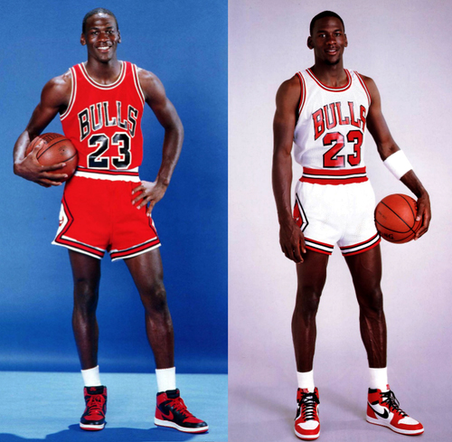

|  |
sneak·er·head/ˈsnēkərˌhed/noun [NORTH AMERICAN] informal a sneaker enthusiast. |
The beginnings of sneakerhead culture started in the United States and was heavily attributed to two major sources.
| Basketball | Hip Hop |
|---|---|
with a spotlight on Michael Jordan and his exclusive shoes nicknamed: Air Jordans |
with the hip-hop movement giving the sneakers street credibility as status symbols |
Today it is an expressive subculture that has become more ubiquitous and more popular than most mainstream cultures.